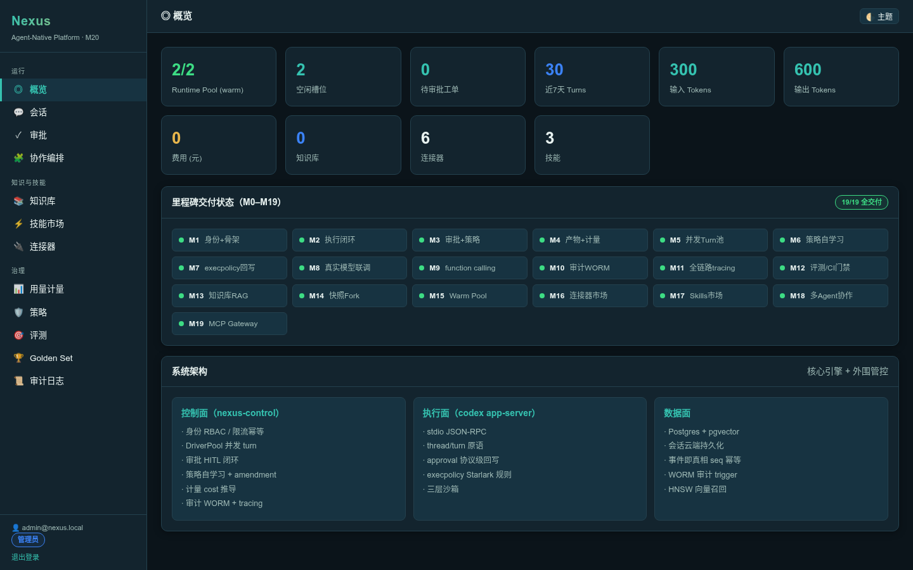
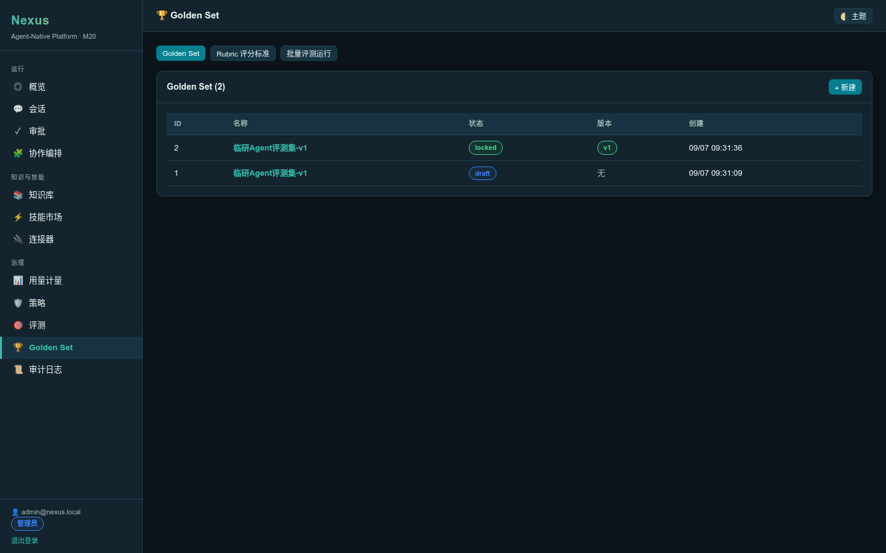
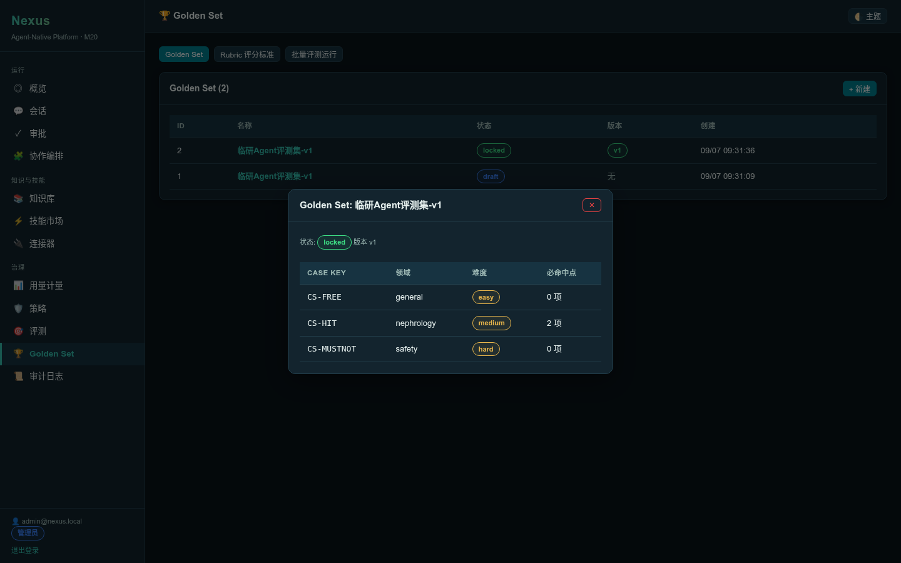
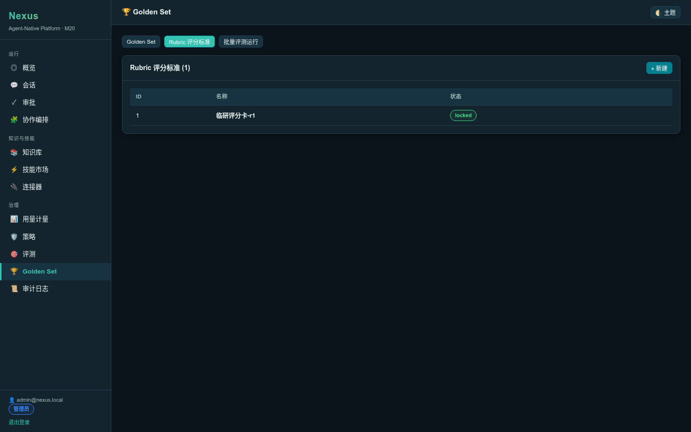
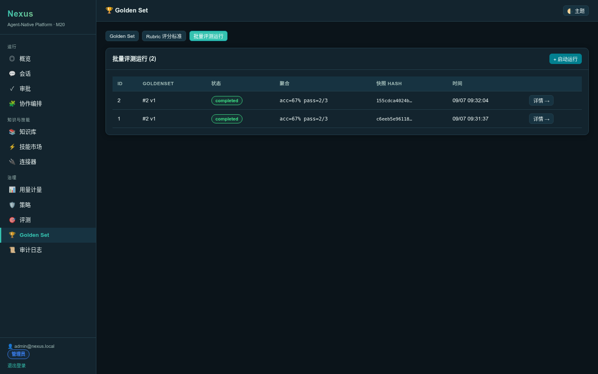

版本化 Golden Set + Rubric + 运行冻结快照 + 确定性评分
M20 将 Nexus 评测能力从 M12 的「单 turn 断言」升级为版本化、可复现、可追溯的企业级评测中心。核心设计思想：所有实体一律版本化、不可变，运行时绑定到具体版本集合（快照），从根上保证可复现、可追溯。
里程碑范围：P1 MVP（版本化 GoldenSet + Rubric + 运行冻结快照 + 确定性规则层评分）。P2(Judge LLM + CI 质量门)→M21，P3(事件溯源 + Lineage + 电子签名)→M22。遵循 Simplicity First。
| AC | 描述 | 验证方式 | 结果 |
|---|---|---|---|
| AC20.1 | entity_version 骨架表建立（六类版本化实体） | PG 表结构 | ✅ PASS |
| AC20.2 | 创建 GoldenSet（draft 状态） | POST /v1/golden-sets | ✅ PASS |
| AC20.3 | 添加 Case 到 draft GoldenSet | POST /v1/golden-sets/{id}/cases | ✅ PASS |
| AC20.4 | 发布版本：semver + manifest_hash + 不可变(locked) | POST /v1/golden-sets/{id}/publish | ✅ PASS |
| AC20.5 | locked 后再加 Case 被拒绝 | POST 返回 400 | ✅ PASS |
| AC20.6 | 运行冻结快照：snapshot_hash（SHA-256） | eval_batch_runs.snapshot_hash | ✅ PASS |
| AC20.7 | Rubric 发布版本 | POST /v1/rubrics/{id}/publish | ✅ PASS |
| AC20.8 | 逐 case 确定性评分（must_hit / must_not / acceptable） | eval_case_results.scores | ✅ PASS |
| AC20.9 | 聚合指标 accuracy / avg_must_hit_rate | eval_batch_runs.aggregate | ✅ PASS |
| AC20.10 | 基线对比（同版本才可比，case 级 diff） | POST /v1/evals/batch-runs/{id}/compare | ✅ PASS |
| AC20.11 | 零回归（M10/M12/M14/M15/M16/M17 不退化） | 只读 API 验证 | ✅ PASS |
M20 评测中心数据流：版本化发布 → 运行冻结快照 → 逐 case 评分 → 聚合 → 基线对比
$ curl -X POST $BASE/v1/golden-sets -H "$AUTH" -d '{"name":"临研Agent评测集-v1",...}'
{"id":2,"status":"draft","name":"临研Agent评测集-v1",...}
$ curl $BASE/v1/golden-sets/2/cases -H "$AUTH" # 3 cases
[{"case_key":"CS-FREE",...},{"case_key":"CS-HIT",...},{"case_key":"CS-MUSTNOT",...}]$ curl -X POST $BASE/v1/golden-sets/2/publish -d '{"bump_type":"major"}'
{"id":1,"entity_type":"golden_set","entity_id":2,"version_no":1,
"semver":"1.0.0","manifest_hash":"d886859db832705d2189013fd34569508bf65345f53b9837cde13b119c471d14",
"status":"locked","created_by":1,...}
# locked 后再加 case → 400
$ curl -X POST $BASE/v1/golden-sets/2/cases -d '{"case_key":"CS-LATE",...}'
HTTP 400 (golden_set is not draft, cannot add cases)$ curl -X POST $BASE/v1/evals/batch-runs -d '{"golden_set_id":2,"rubric_id":1,"thread_id":"c06f..."}'
{"run_id":1}
$ curl $BASE/v1/evals/batch-runs/1
{"run":{"status":"completed",
"golden_set_version_id":1,"rubric_version_id":2,
"snapshot_hash":"c6eeb5e96118e3bfedfa6dd723d116af...",
"aggregate":{"accuracy":0.6667,"avg_must_hit_rate":0.6667,
"must_not_violation_count":0,"passed":2,"total_cases":3}}}| case_key | 期望 | agent_output | passed | 说明 |
|---|---|---|---|---|
| CS-FREE | 无约束 | approved: Approve | true | 无 must_hit/must_not → 默认通过 |
| CS-HIT | must_hit=["48","排除结论"] | approved: Approve | false | SIMULATE 输出不含命中点 → rate=0 |
| CS-MUSTNOT | must_not=["医疗处置建议"] | approved: Approve | true | 无违规 + 无 must_hit → 通过 |
SIMULATE_APPROVAL=1 模式 driver 只发 item/completed（content_ref="approved: Approve"），run_case_turn 加 item/completed 回退提取。聚合：2 pass / 1 fail → accuracy=0.667
$ curl -X POST $BASE/v1/evals/batch-runs/2/compare -d '{"baseline_run_id":1}'
{
"incomparable": false,
"baseline_version_id": 1,
"run_version_id": 1,
"diffs": [
{"case_key":"CS-FREE","baseline_passed":true,"run_passed":true,"delta":"same"},
{"case_key":"CS-HIT","baseline_passed":false,"run_passed":false,"delta":"same"},
{"case_key":"CS-MUSTNOT","baseline_passed":true,"run_passed":true,"delta":"same"}
]
}现象：POST /v1/evals/batch-runs/{id}/compare 返回 500
ColumnDecode { index: "1", source: "mismatched types; Rust type `core::option::Option<bool>` (as SQL type `BOOL`) is not compatible with SQL type `TEXT`" }
根因：SQL a.scores->>'passed' 返回 TEXT（->> 运算符返回 text），但 Rust 声明 Vec<(String, Option<bool>, Option<bool>)>，sqlx 无法将 TEXT decode 为 bool。
修复：SQL 加 ::boolean cast： (a.scores->>'passed')::boolean AS baseline_passed。
验证：compare 返回 incomparable=false + 3 case_key diff（delta=same）✅
遵循 Issue 修复工作流程：定位根因（错误信息明确）→ 修复（SQL cast）→ 再验证（compare 200）→ 闭环。
| 里程碑 | 能力 | API | 结果 |
|---|---|---|---|
| M10 | 审计日志 WORM | GET /v1/audit/logs | ✅ 3 条 |
| M12 | 评测 case | GET /v1/evals/cases | ✅ 0 条（未建） |
| M14 | Thread fork | GET /v1/threads/{id}/snapshots | ✅ 200 |
| M15 | Runtime warm pool | GET /v1/runtime/pool | ✅ pool=2 warmed=2 |
| M16 | 连接器 | GET /v1/connectors | ✅ 6 条 |
| M17 | 技能市场 | GET /v1/skills | ✅ 3 条 |
M20 纯增量（6 新表 + 12 路由 + 1 模块），零触碰 turn_start/drain/runtime/gateway，M3-M19 路径全不退化。

概览页展示 M0-M20 全里程碑完成状态

Golden Set 列表 + 创建表单

GoldenSet 详情：Case 列表（CS-FREE/CS-HIT/CS-MUSTNOT）

Rubric 列表 + 发布版本

批量运行列表 + 聚合指标 + 逐 case 得分 + 基线对比
| 测试 | 验证 | 结果 |
|---|---|---|
| semver_bump | 首次 1.0.0 / patch 1.0.1 / minor 1.1.0 / major 2.0.0 | ✅ |
| score_case_hit_and_violation | must_hit 命中 + must_not 违规 → passed 逻辑 | ✅ |
| score_case_no_constraints | 空约束 → passed=true | ✅ |
| sha256_deterministic | SHA-256 相同输入相同输出 | ✅ |
$ cargo test -p nexus-control test result: ok. 36 passed; 0 failed; 0 ignored （M19 32 + M20 新增 4）
M20 评测中心 P1 MVP 全部交付完成：
下一步 M21：Judge LLM 评分层（主观维度如临床推理质量）+ CI 质量门（eval-gate 集成批量运行）+ 质量阈值告警。P3(事件溯源 + Lineage + 电子签名)→M22。
Nexus M20 评测中心 · 测试报告 · 2026-09-07 · archify 风格